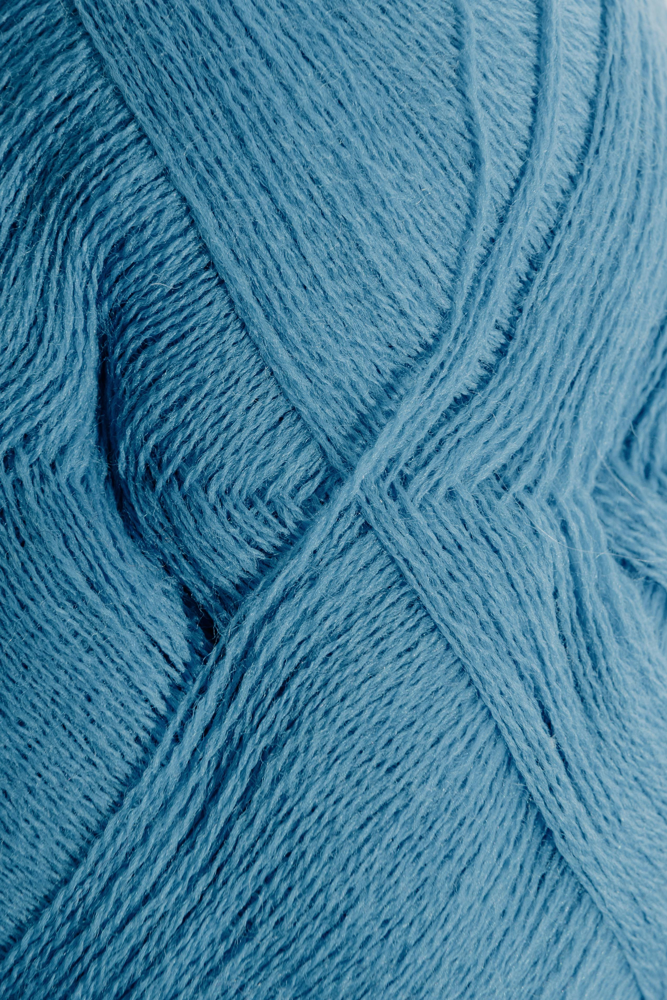

Dyer's Woad
Isatis tinctoria

Location
Dyer's woad is native to southeastern Russia, but was grown across all of Europe. Alongside madder and weld, it was one of the staples of the medieval European dyeing industry. It is very likely that woad was used as a dye in ancient Egypt.
Woad was brought to the east coast of the United States by European settlers. Eventually, it made it's way to the intermountain west as a contaminant in alfalfa seeds. There, it became an invasive species, and has spread across much of North America.
Identification
Woad is a biennial plant which can grow up to four feet tall. it is characterised by its long leaves, purplish stems, and umbrella-shaped clusters of small, bright yellow flowers. The leaves are green, oblong, and lightly toothed or wavy. The veins are much paler than the leaf itself.
The fruiting body of the dyer's woad plant is a small, flat seed pod. It is yellow-green in color while growing, and purple-black when dried.
Color
Woad produces a blue dye, ranging from very pale to a dark navy, depending on the strength of the dye, and the number of dye baths used. By manipulating the pH of the dye bath, one can also produce green (alkiline), purple (pH of 8), and a reddish shade (pH of 7).
Green and purple shades can also be achieved by overdyeing with a red or yellow dye. A range of browns can be achieved by overdyeing an orange shade.
Mordants/Fixatives
You do not need a mordant or fixative to dye with woad. This is because the blue color of woad is produced through oxidation rather than a chemical reaction. However, if you intend to overdye with another color after you dye with woad, it is better to soak your dyeing medium in a mordant bath before dyeing with woad. Choose the mordant that will work best for the result you want to produce with your second dye bath.